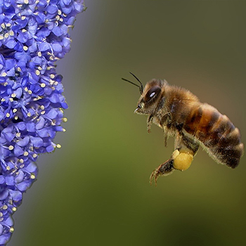

Etape 2 L'insecte se pose sur la fleur
- Une fois attiré par une fleur, l’insecte s’y pose et s’y nourrit. Du pollen se dépose alors sur celui-ci qu’il emportera sur la prochaine fleur qu’il visitera. Si ces deux fleurs sont de la même espèce, il y aura alors pollinisation et en conséquence plus tard formation d’un fruit et d’une graine.
- Certaines fleurs ont des formes ou possèdent des mécanismes qui favorisent le dépôt de pollen sur les insectes. La sauge possède des étamines à bascule, lorsque l’insecte se pose sur la fleur, il appuie sur une sorte de petite pédale ce qui fait basculer les étamines qui viennent alors frotter contre le dos de l’insecte et y déposent du pollen. En allant se poser sur une autre fleur, l’insecte dépose le pollen de son dos sur le stigmate.